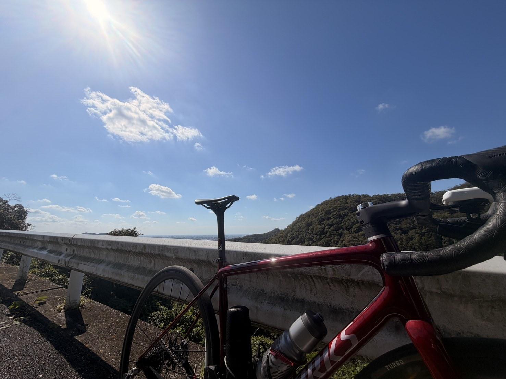
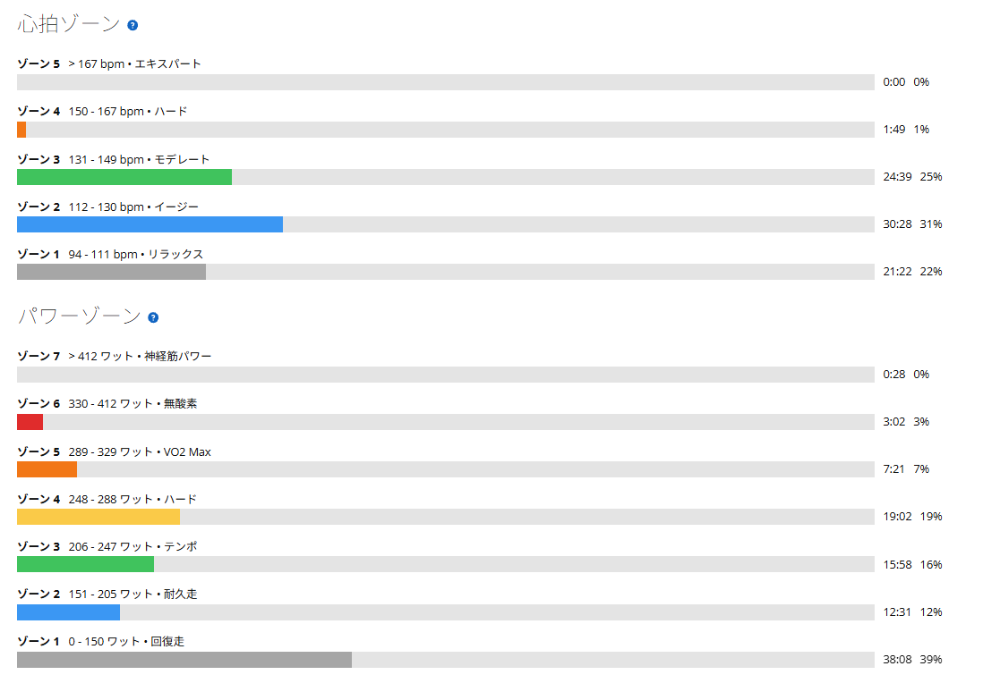
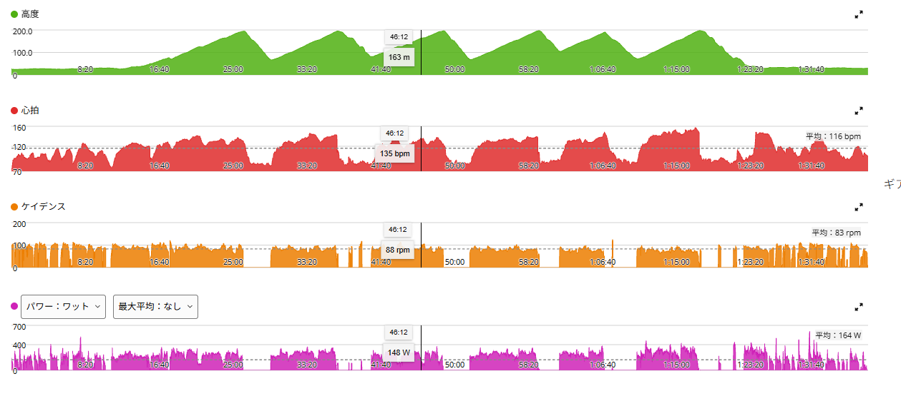

膝の違和感から復帰途中。唐沢を気持ちよく走れた日
ここ数日、膝の前側に違和感があった。場所は膝のお皿の真ん中あたり。少し前に5kmほどジョギングしたのがきっかけかもしれないし、最近は自転車にもかなり乗っていたので、単純に負荷が重なっていただけかもしれない。
歩いたり走ったりすると少し気になる一方で、自転車ではそこまで問題が出ない。そんな状態だったので、今日は「高強度をやる日」ではなく、膝の様子を見ながら唐沢を走ることにした。

31.68km・NP220W・TSS102.8
- 全体31.68km / 1時間36分36秒 / 獲得778m / 平均気温22.7℃
- 負荷平均164W / NP220W / IF0.801 / TSS102.8
- 心拍・回転平均116bpm / 最大158bpm / 平均83rpm
- 効果有酸素TE3.3 / 無酸素TE0.0 / 運動負荷109

様子見のつもりが、登りでは普通に踏んでいた
数字だけ見ると、完全な回復走ではない。唐沢を何本か繰り返しているので、登りではそれなりにパワーが出ている。主な登りは240W前後、253W、285W、272W前後。パワーはゾーン4に19分、ゾーン5以上にも約11分入っている。
思ったより普通に踏んでいる。様子見とは。

膝は全然痛くなかった。でも全開はまだ怖い
今日いちばん確認したかったのはここ。走っている間、膝は全然痛くなかった。違和感もほぼなし。唐沢を登っても問題なく、普通にペダリングできた。
ただし、フルで踏むのはまだ少し怖い。「痛い」わけではない。でも「ここで全開にして大丈夫かな」という不安はまだ残っている。なので、しばらくは315W×5分×5本のような高強度や、全開のヒルクライムは控えるつもりである。今は、痛みなく自転車に乗れる日を何回か積み重ねる方を優先する。
ちなみに膝の前側の違和感は、7月にもあった。そのときは7月10日〜12日を低強度で様子見にして、14日には違和感が消えて高負荷のライドに戻れている。今回も同じようにいくとは限らないが、焦らなければ戻れると思っておく。
歩くと少し気になる。でも自転車は問題ない
最近の感覚として面白いのが、歩行やジョギングのような動きでは少し違和感が出ることがあるのに、自転車ではほとんど問題がないこと。自転車は着地の衝撃がなく、ペダリングの動きも一定なので、今の膝にはこちらの方が合っているのかもしれない。
逆にランニングは、しばらく休むことにする。自転車には乗るが、高強度はまだやらない。歩行やランニングでの違和感が消えるまで、それくらいで様子を見る。
今日は、とにかく気持ちよかった
そして今日は、膝の確認以上に気分が良かった。天気もよく、青空の下で唐沢を走るのがとても気持ちよかった。
最近は膝のことがあって、思うように乗れない日が続いていた。だからこそ、普通に自転車に乗れて、普通に登れて、景色を見て「気持ちいい」と思えたことが嬉しかった。写真を撮ったときも、「ああ、今日は来てよかったな」という感じだった。
唐沢リピート中に友人と遭遇
さらに、唐沢をリピートしていたら友人に偶然会った。少し立ち話。それだけなのだが、なんだかかなりハッピーだった。こういう偶然があるのも外ライドのいいところ。ローラーでは絶対に起きない。
数字を追うトレーニングも好きだが、景色があって、偶然人に会って、少し話して、そのまままた走る。今日はそういう「自転車そのものが楽しい日」だった。
今日やってみて思ったこと
膝に違和感があると、「また高強度できるかな」「いつ戻れるかな」ということばかり考えてしまう。でも今日は、「普通に乗れて楽しい」という感覚が戻ってきた。これはかなり大きい。
今はまだ、フルで踏むのは少し怖い。だから無理はしない。それでも唐沢を痛みなく登れて、景色が気持ちよくて、友人にも会えた。久しぶりに「トレーニングできた」より「自転車に乗って楽しかった」が先に来た日だった。
次に見るポイント
- 翌日の膝翌日も膝の前側に違和感が出ないか
- 中強度200〜250W程度の中強度を繰り返しても問題ないか。登りの上限を決めて走る
- 日常の動き歩行や階段での違和感が消えるか
- 焦らない高強度を再開するタイミングを焦らない。痛みなく乗れる日を積み重ねる